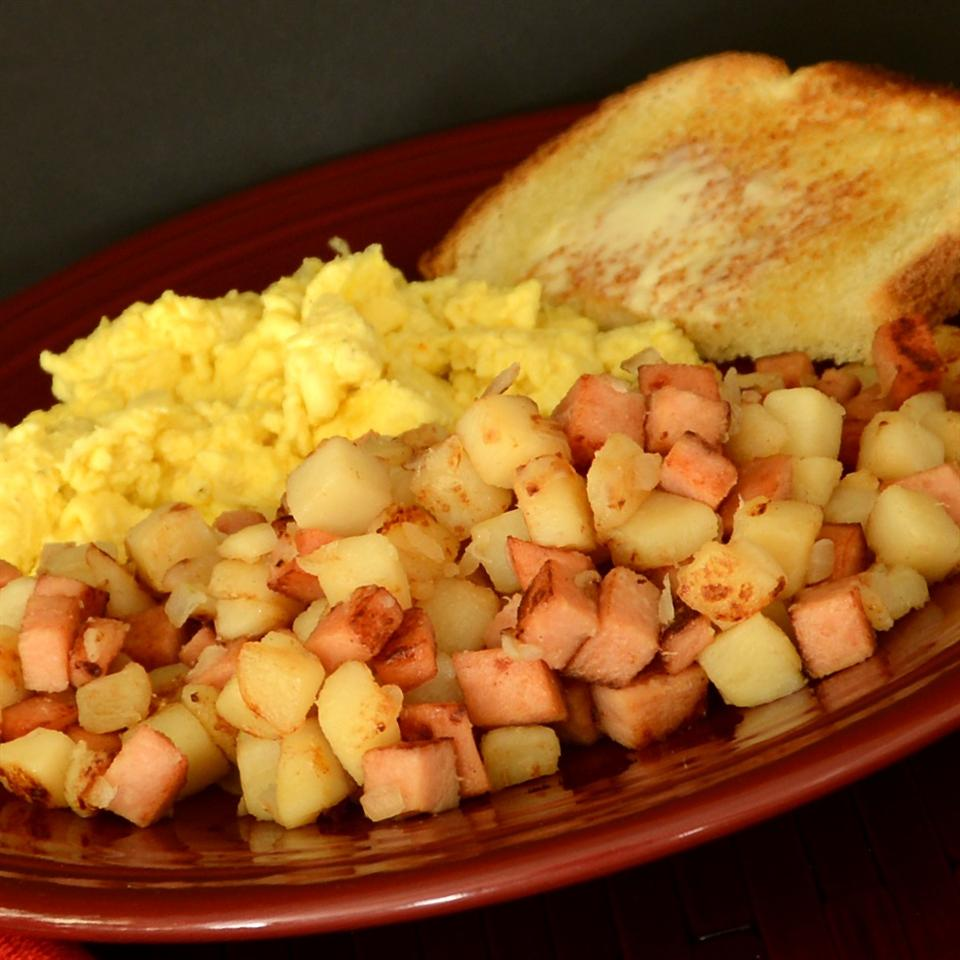

Who Hash

'He cleaned out that ice box as quick as a flash. Why, the Grinch even took their last can of Who hash.'
From Dr Seuss' 'The Grinch', in the book 'Who hash' comes from a can, as that doesn't sound very appetizing, we won't be putting it in a can (although you could, if you really wanted to.)
Ingredients
- 425g potatoes
- 1 can of luncheon meat (e.g spam)
- 1/2 onion, chopped
- 1 tbsp oil
Steps
- Peel and dice the potatoes.
- Heat 1 tbsp oil over medium heat. Add the potatoes and meat, occasionally tossing, and cook until lightly browned (around 10 mins.)
- Add onions and cook until tender (around 5-7 mins.)
- Serve, preferably on a plate, though you can add to can for authenticity.